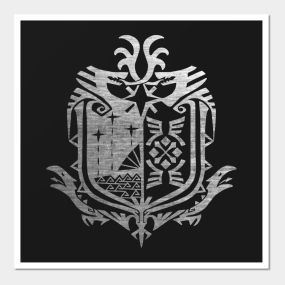
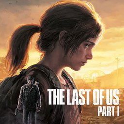
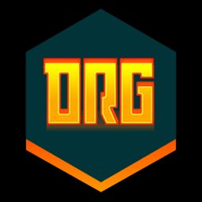

3.0 Game Experience
 HK
HK
경험의 자산이 된 게임들.
즐기며 배운 게임들입니다. 마우스로 끌어서 넘기거나, 아이콘 위에 마우스를 올리면 자세한 내용이 보입니다.
HK할로우 나이트
D2
데스티니 가디언즈

MH몬스터 헌터

TLOU더 라스트 오브 어스

DRG딥 락 갤럭틱
 이미지 자리 — 옵시디언 그래프 뷰
이미지 자리 — 옵시디언 그래프 뷰